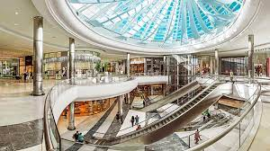

ABOUT US
Pine City Mall - Mall of the Pine Lands
Pine City Mall is an enclosed super-regional shopping mall on the southside of Savannah, Georgia, that opened August 29, 2020. Anchor stores include Target, Bass Pro Shops, and Dillard's. There are 2 vacant anchor stores that were once Snip and express Stores.
WHERE WILL YOU FIND US?
At the centre of Pine City. In the Pine Lands